install.packages(
c("naniar", "here", "future", "doFuture", "readxl", "janitor",
"correlation", "performance", "glmmTMB", "tidymodels", "ranger",
"tidyverse")
)
# *lock in* the session state
renv::snapshot()
# update only the *ranger* package
renv::snapshot(packages = "ranger", update = TRUE)Master
The code and report is entirely my own work, unless indicated otherwise. ChatGPT was used as an AI assistant to help write code.
Summary
Introduction and Objective
- Predict the total number of corners in football matches using limited available data (league ID, date, home and away team IDs).
- Derive betting probabilities (under, exactly, over a given line) and size bets based on model predictions.
Data Preparation and Exploratory Data Analysis (EDA)
Data Cleaning and Preparation:
- Converted dates to date objects and IDs to factors.
- Derived additional features: year, month, day, total goals, goal difference, total corners, match outcomes.
Key Insights from EDA:
- 13 leagues (most with sufficient observations).
- Most leagues contain around 30 teams over the observed period.
- Some teams have fewer than 10 matches.
- Home team advantage clearly visible in game outcomes.
- League-specific effects clearly exist.
- Team-specific effects present but weaker.
- Home team advantage visible in goals and corners.
- Negative correlation between home and away corners observed.
- Slight upward trend in total corners over time identified.
- Minimal to no correlation between goals statistics and corners, and between corners and match outcomes.
Conclusions from EDA:
Goals lack sufficient predictive power for corners to use in an intermediate step for modelling corners; thus, models will primarily rely on league and team effects.
Corners seem well approximated by a Poisson distribution (particularly individual team corners; assuming independence, total corners would also follow Poisson).
However, home and away corners are not independent. An negative correlation is observed which is surprising. With hectic and stalemate games, one would expect a positive correlation between home and away corners. This negative correlation could turn positive once other factors are controlled for, but with this few features this is unlikely (tested it as well with residuals of hierarchical Poisson GLMM and negative correlation persisted)
If the correlation were positive, one could also think about fitting a bivariate Poisson model for home and away corners to account for their dependence, but this was not pursued further due to the negative correlation
Therefore, in terms of modelling the following approach was chosen:
- Fit baseline constant-rate and time-decaying Poisson models to establish a simple benchmark
- Build upon simple Poisson models, by modelling league and team effects as random effects, giving rise to a hierarchical Poisson GLMM
- Evaluate whether a non-linear model could improve upon the linear specifications by fitting a random forest model for predicting the \(\lambda\)’s of multiple Poisson distributions (depending on the splits of the Random Forest)
Baseline Models
Constant-rate Poisson Model
- Assumption: Matches within each league have a constant rate of corners.
- Mathematical representation: \(\text{Total Corners} \sim \text{Poisson}(\lambda_{\text{league}})\)
Time-decaying Poisson Model
- Matches further in the past receive lower weight in estimation (exponential decay with half-life of two years).
- Mathematical representation: \(\text{Total Corners} \sim \text{Poisson}(\lambda_{\text{league}}), \quad \text{with weights } w_i = e^{-\frac{\log(2) \cdot \Delta t_i}{\text{half-life}}}\)
Hierarchical Generalized Linear Mixed Model (GLMM)
Extended Poisson model with hierarchical random effects for leagues and teams (league and team random effects assumed standard normal).
Separate models for home and away corners, predictions summed to total corners.
Mathematical representation: \(\text{Home Corners} \sim \text{Poisson}(\lambda_{\text{home}}) \quad \text{with} \quad \log(\lambda_{\text{home}}) = \beta_0 + u_{\text{league}} + u_{\text{home-team}} + u_{\text{away-team}}\) \(\text{Away Corners} \sim \text{Poisson}(\lambda_{\text{away}}) \quad \text{with} \quad \log(\lambda_{\text{away}}) = \beta_0 + v_{\text{league}} + v_{\text{home-team}} + v_{\text{away-team}}\)
Over-dispersion check (variance > 1.5x mean) revealed under-dispersion (factor ~0.63), confirming Poisson appropriateness (Poisson distribution relies on the mean and variance being approximately equal). Otherwise one would need to use another distribution, such as a negative-binomial distribution
Evaluation compared to baseline models:
- Evaluated using RMSE, Negative Log-Likelihood (NLL), shrinkage plot and bootstrap confidence interval.
- All methods point to the conclusion that the extension to a hierarchical Poisson GLMM model does not improve performance greatly, it was still chosen though due to minor performance gains.
Random Forest Model
- Leveraged league ID, team IDs, and month of match for nonlinear modeling.
- Hyperparameters tuned via Bayesian optimization.
- Model underperformed relative to GLMM (expected given sparse features and minimal feature interactions).
Model Selection and Predictions
- Hierarchical Poisson GLMM selected based on predictive performance.
- Generated predictions for test dataset.
Betting Probabilities and Sizing
Converted predicted corner counts to betting probabilities (below, at, or above given Asian betting lines).
Mathematical probability determination: \(P(\text{under}) = P(X \leq \text{line}), \quad P(\text{exact}) = P(X = \text{line}), \quad P(\text{over}) = P(X > \text{line})\)
Calculated expected values and Sharpe ratios for each potential bet: \(\text{EV} = P_{\text{win}} \cdot (\text{odds} - 1) - P_{\text{loss}}\) \(\text{Sharpe Ratio} = \frac{\text{EV}}{\sqrt{\text{Variance}}} \quad \text{with Variance computed from win/loss probabilities}\)
Bet-sizing strategies:
- Risk-parity approach ensuring portfolio variance is 1% of total bankroll.
- Full bankroll utilization, scaling bets to available capital (selected, using all 341 units).
Conclusion and Practical Implications
- Hierarchical Poisson GLMM effectively balances model complexity and performance given the limited data.
- Provides robust, data-driven methodology for accurate predictions and informed betting decisions.
1 Install packages & take snapshot
2 Load required packages
# restore the snapshot taken above
renv::restore()
library(naniar) # missing‑data visualisations
library(here) # build OS‑agnostic paths
library(future) # parallel back‑end (tidymodels)
library(doFuture)
library(readxl) # Excel IO
library(janitor) # data cleaning helpers
library(correlation) # correlation matrices
library(performance) # model diagnostics
library(glmmTMB) # GLMMs (Poisson / NB)
library(glue) # string interpolation
library(tidymodels) # modelling grammar
library(ranger) # fast random forest
library(tidyverse) # ggplot2, dplyr, etc.3 Read & tidy data
#---------------------------------------------------------------------
# 3.1 Train set ----------------------------------------------------
#---------------------------------------------------------------------
train_all <- read_excel(here("train.xlsx")) |>
janitor::clean_names() |>
mutate(
match_id = as_factor(match_id),
league_id = as_factor(league_id),
date = lubridate::ymd(date),
# Calendar features ------------------------------------------------
year = as_factor(lubridate::year(date)),
month = as_factor(lubridate::month(date)),
day = as_factor(lubridate::day(date)),
# Team IDs ---------------------------------------------------------
home_team_id = as_factor(home_team_id),
away_team_id = as_factor(away_team_id),
# Derived football stats ------------------------------------------
total_goals = home_goals + away_goals,
goals_diff = abs(home_goals - away_goals),
total_corners = home_corners + away_corners,
outcome = as_factor(case_when(
home_goals > away_goals ~ "home",
home_goals < away_goals ~ "away",
TRUE ~ "draw")
)
)
#---------------------------------------------------------------------
# 3.2 Test set -----------------------------------------------------
#---------------------------------------------------------------------
test <- read_excel(here("test.xlsx")) |>
select(-matches("^\\.\\.\\.")) |> # drop empty columns
janitor::clean_names() |>
mutate(
match_id = as_factor(match_id),
league_id = as_factor(league_id),
date = lubridate::ymd(date),
year = as_factor(lubridate::year(date)),
month = as_factor(lubridate::month(date)),
day = as_factor(lubridate::day(date)),
home_team_id = as_factor(home_team_id),
away_team_id = as_factor(away_team_id)
)4 Exploratory Data Analysis (EDA)
4.1 League & team sizes
# 13 leagues (all with mostly enough observations)
tabyl(train_all$league_id)
# Most leagues have around 30 teams over the considered time span
train_all |>
group_by(league_id) |>
summarise(
n_dist = n_distinct(home_team_id)
)
# Some teams with few (below 10) matches (at least as home or away team, not
# jointly)
tabyl(train_all$home_team_id)
tabyl(train_all$away_team_id)4.2 Outcome distribution (home advantage)
# Home team advantage exists
tabyl(train_all$outcome)4.3 Goals distribution
# Home goals
tabyl(train_all$home_goals)
summary(train_all$home_goals)
train_all |>
ggplot(aes(x = home_goals)) +
geom_bar(fill = "blue", alpha = 0.6) +
scale_x_continuous(breaks = function(x) seq(floor(min(x)), ceiling(max(x)),
by = 1),
minor_breaks = NULL)# Away goals
tabyl(train_all$away_goals)
summary(train_all$away_goals)
train_all |>
ggplot(aes(x = away_goals)) +
geom_bar(fill = "blue", alpha = 0.6) +
scale_x_continuous(breaks = function(x) seq(floor(min(x)), ceiling(max(x)),
by = 1),
minor_breaks = NULL)# Home vs. Away goals (more home goals)
train_all |>
pivot_longer(cols = c(home_goals, away_goals), names_to = "Side", values_to = "Goals") |>
ggplot(aes(x = Goals, fill = Side)) +
geom_histogram(position = "identity", alpha = 0.5, binwidth = 1) +
scale_x_continuous(breaks = function(x) seq(floor(min(x)), ceiling(max(x)),
by = 1),
minor_breaks = NULL)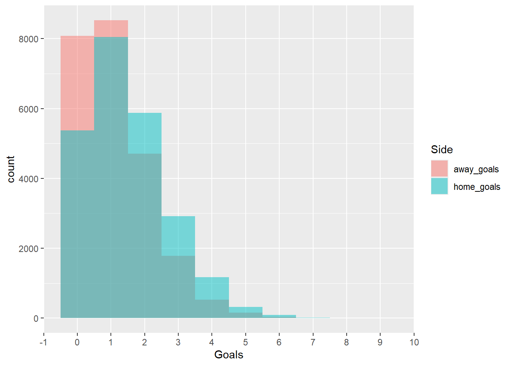
# Total goals
tabyl(train_all$total_goals)
summary(train_all$total_goals)
train_all |>
ggplot(aes(x = total_goals)) +
geom_bar(fill = "blue", alpha = 0.6) +
scale_x_continuous(breaks = function(x) seq(floor(min(x)), ceiling(max(x)),
by = 1),
minor_breaks = NULL)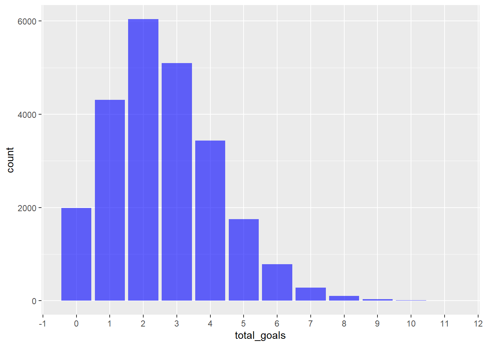
# Goal difference
tabyl(train_all$goals_diff)
summary(train_all$goals_diff)
train_all |>
ggplot(aes(x = goals_diff)) +
geom_bar(fill = "blue", alpha = 0.6) +
scale_x_continuous(breaks = function(x) seq(floor(min(x)), ceiling(max(x)),
by = 1),
minor_breaks = NULL)4.4 Corners distribution & trends
# Home corners
tabyl(train_all$home_corners)
summary(train_all$home_corners)
train_all |>
ggplot(aes(x = home_corners)) +
geom_bar(fill = "blue", alpha = 0.6) +
scale_x_continuous(breaks = function(x) seq(floor(min(x)), ceiling(max(x)),
by = 1),
minor_breaks = NULL)# Away corners
tabyl(train_all$away_corners)
summary(train_all$away_corners)
train_all |>
ggplot(aes(x = away_corners)) +
geom_bar(fill = "blue", alpha = 0.6) +
scale_x_continuous(breaks = function(x) seq(floor(min(x)), ceiling(max(x)),
by = 1),
minor_breaks = NULL)# Home vs. Away corners (more home corners)
train_all |>
pivot_longer(cols = c(home_corners, away_corners), names_to = "Side", values_to = "Corners") |>
ggplot(aes(x = Corners, fill = Side)) +
geom_histogram(position = "identity", alpha = 0.5, binwidth = 1) +
scale_x_continuous(breaks = function(x) seq(floor(min(x)), ceiling(max(x)),
by = 1),
minor_breaks = NULL)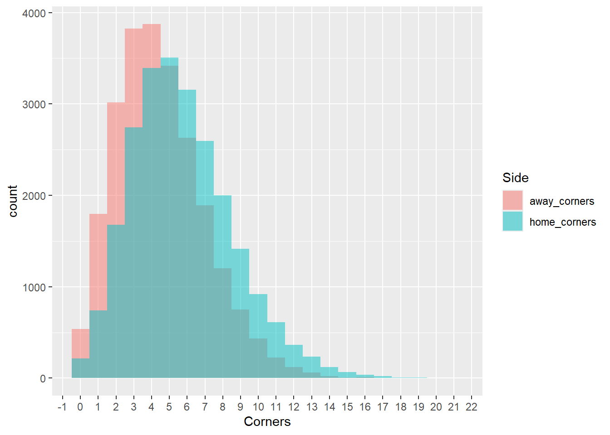
# Total corners
tabyl(train_all$total_corners)
summary(train_all$total_corners)
train_all |>
ggplot(aes(x = total_corners)) +
geom_bar(fill = "blue", alpha = 0.6) +
scale_x_continuous(breaks = function(x) seq(floor(min(x)), ceiling(max(x)),
by = 1),
minor_breaks = NULL)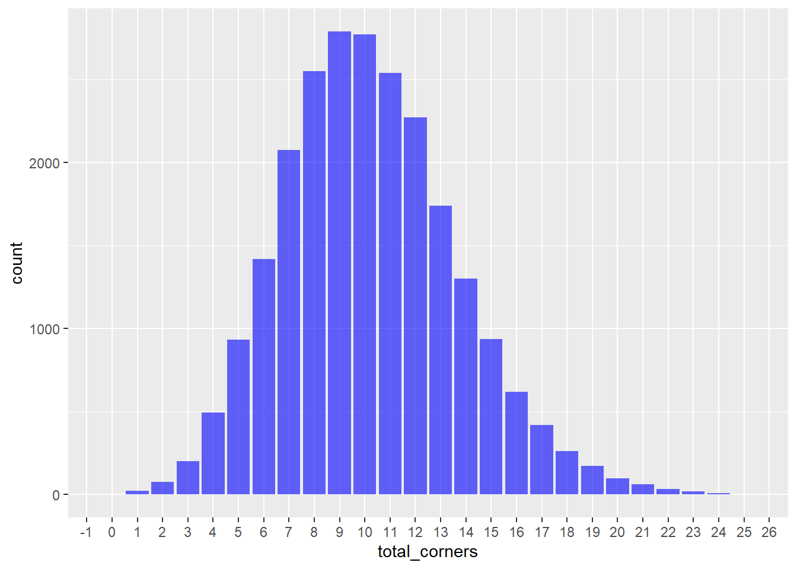
# Total corners by league (league effects seem to exist)
train_all |>
ggplot(aes(x = total_corners, color = league_id)) +
geom_density(linewidth = 0.75)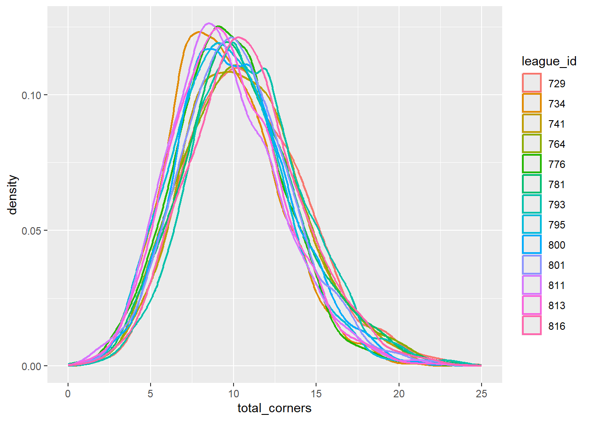
train_all |>
ggplot(aes(x = league_id, y = total_corners)) +
geom_boxplot()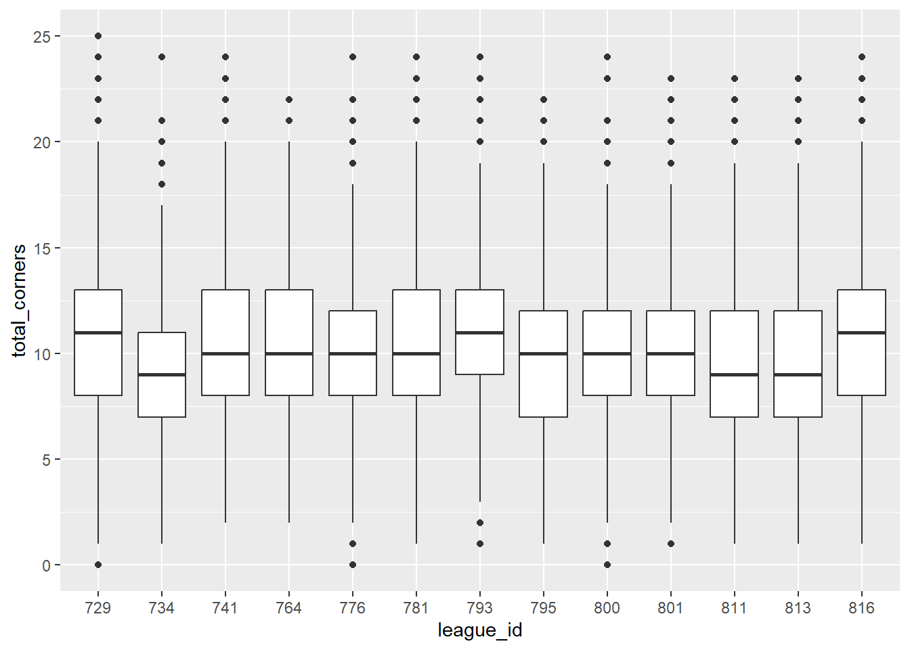
# Total corners by teams for a specific league (some team effects might exist)
train_all |>
filter(league_id == 781) |>
ggplot(aes(x = total_corners, color = home_team_id)) +
geom_density(linewidth = 0.75)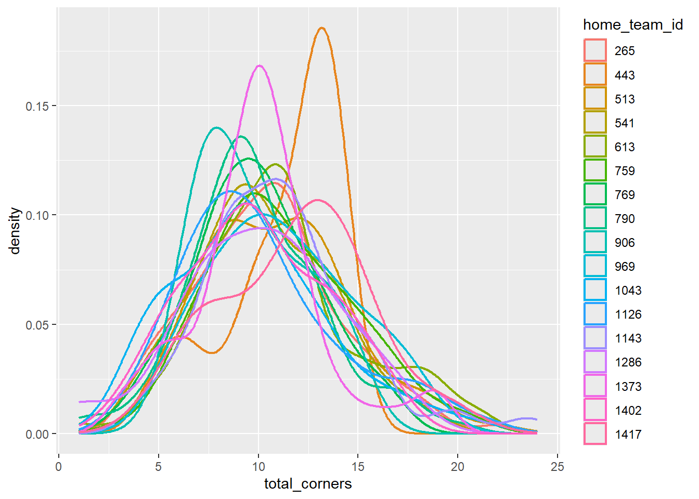
train_all |>
filter(league_id == 781) |>
ggplot(aes(x = home_team_id, y = total_corners)) +
geom_boxplot()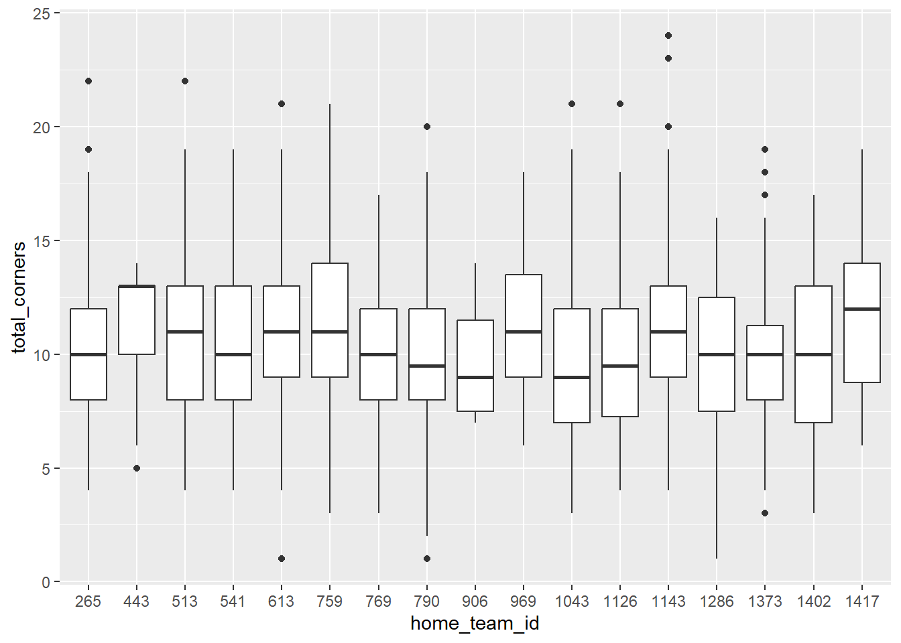
# Total corners by outcome of game (no effects seem to exist, could have thought
# that draws lead to less corners, e.g. stalemate)
train_all |>
filter(!is.na(outcome)) |>
ggplot(aes(x = total_corners, color = outcome)) +
geom_density(linewidth = 0.75)train_all |>
filter(!is.na(outcome)) |>
ggplot(aes(x = outcome, y = total_corners)) +
geom_boxplot()train_all |>
filter(!is.na(outcome)) |>
ggplot(aes(x = total_corners, y = after_stat(density), fill = outcome)) +
geom_histogram(position = "identity", alpha = 0.5, binwidth = 1) +
scale_x_continuous(breaks = function(x) seq(floor(min(x)), ceiling(max(x)),
by = 1),
minor_breaks = NULL)# Upward trend seems to exist in total corners (control for it indirectly in
# GLMM by using time-decaying weights and ignore it for random forest)
train_all |>
ggplot(aes(x = date, y = total_corners)) +
geom_count(alpha = 0.5) +
geom_smooth(method = "lm")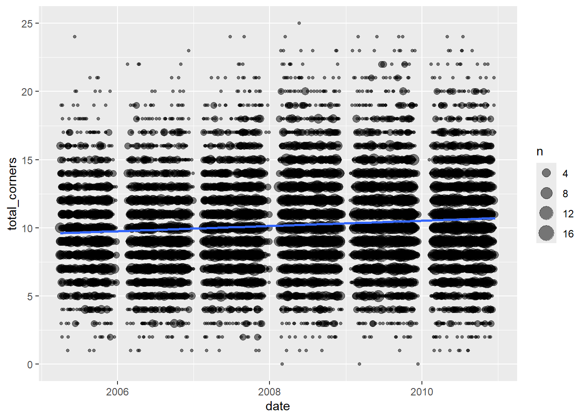
4.5 Relationship between and within Goals and Corners
# No large, significant correlations exist between goals and corners (only goal
# difference is significant but too small -0.05)
train_all |>
select(home_goals, home_corners, away_goals, away_corners,
total_goals, goals_diff, total_corners) |>
correlation::correlation() |>
summary(redundant = TRUE)# Correlation Matrix (pearson-method)
Parameter | home_goals | home_corners | away_goals | away_corners
---------------------------------------------------------------------
home_goals | | -0.03*** | -0.01 | 0.01
home_corners | -0.03*** | | 0.01 | -0.17***
away_goals | -0.01 | 0.01 | | 0.00
away_corners | 0.01 | -0.17*** | 0.00 |
total_goals | 0.75*** | -0.02 | 0.66*** | 0.01
goals_diff | 0.49*** | -0.04*** | 0.12*** | -0.01
total_corners | -0.02 | 0.70*** | 0.01 | 0.58***
Parameter | total_goals | goals_diff | total_corners
--------------------------------------------------------
home_goals | 0.75*** | 0.49*** | -0.02
home_corners | -0.02 | -0.04*** | 0.70***
away_goals | 0.66*** | 0.12*** | 0.01
away_corners | 0.01 | -0.01 | 0.58***
total_goals | | 0.44*** | -0.01
goals_diff | 0.44*** | | -0.05***
total_corners | -0.01 | -0.05*** |
p-value adjustment method: Holm (1979)# Home and away corners are surprisingly negatively correlated (would have
# expected that home and away corners coincide, e.g. hectic vs. slow games)
train_all |>
ggplot(aes(x = home_corners, y = away_corners)) +
geom_count() +
geom_smooth(method = "lm")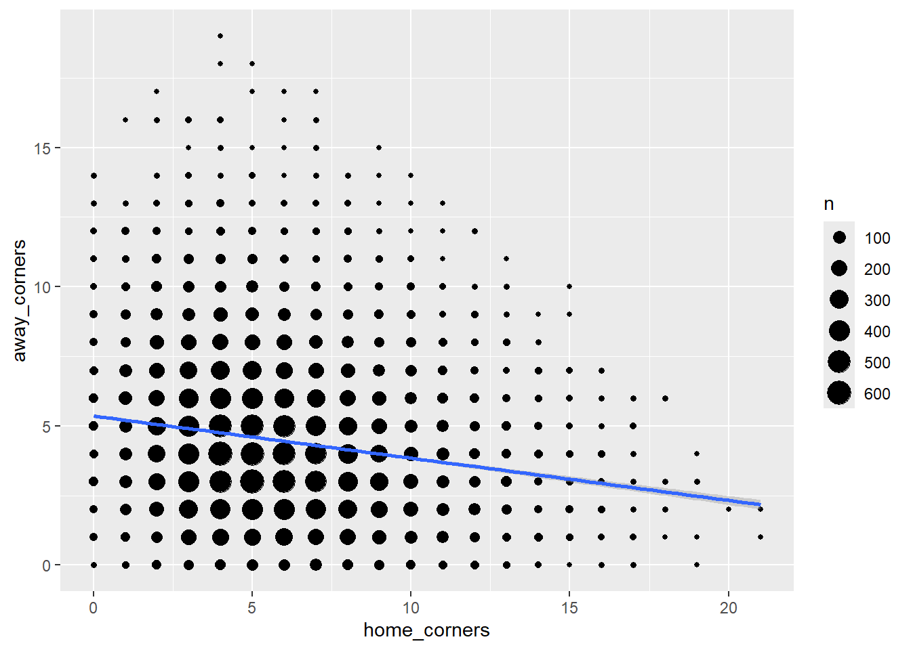
# No relationship between total number of goals and corners
train_all |>
ggplot(aes(x = total_goals, y = total_corners)) +
geom_count() +
geom_smooth(method = "lm")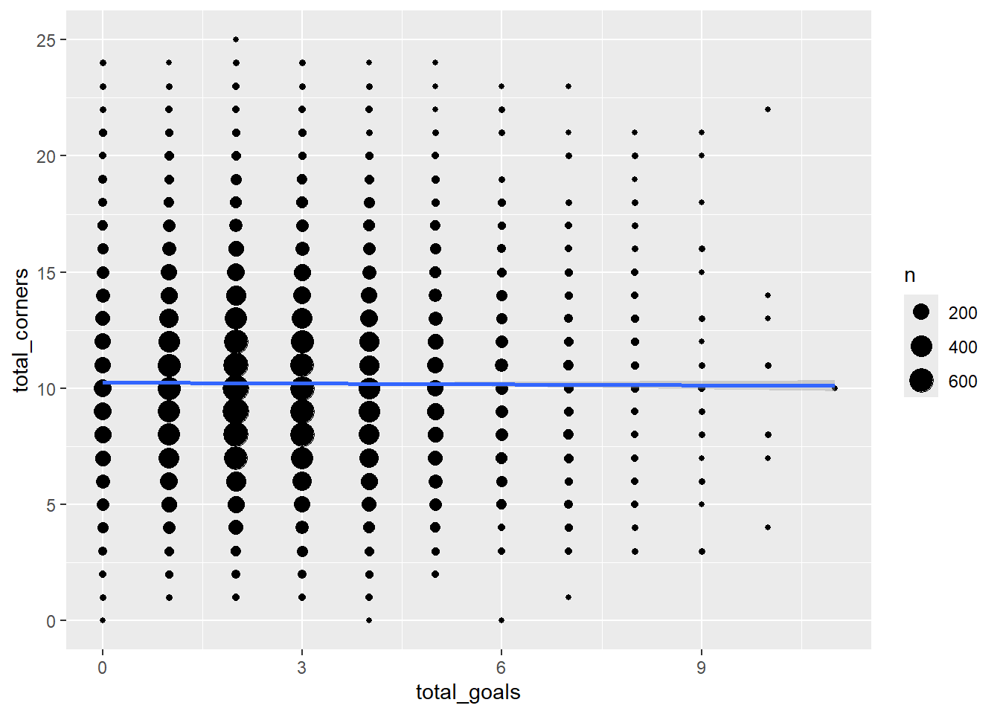
# Small negative relationship between total corners and goal difference but too
# small to be relevant
train_all |>
ggplot(aes(x = goals_diff, y = total_corners)) +
geom_count() +
geom_smooth(method = "lm")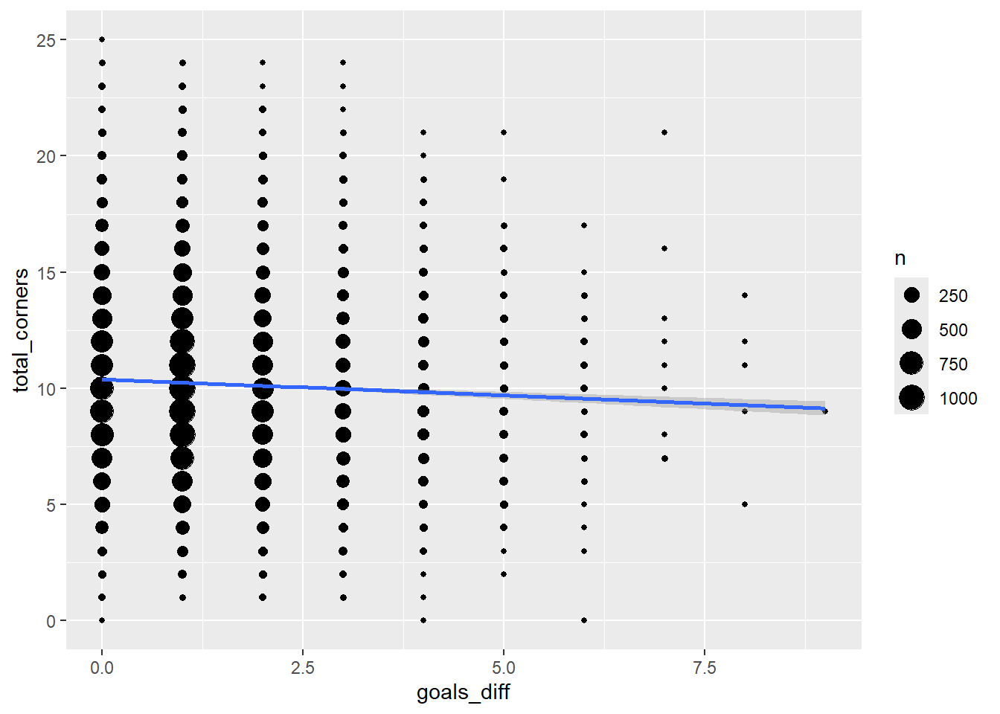
5 Baseline Poisson models
5.1 Constant‑rate Poisson (per league)
fit_league_glm_const <- glm(
total_corners ~ 0 + league_id, # one λ per league
family = poisson,
data = train_all
)
lambda_const <- broom::tidy(fit_league_glm_const) |>
transmute(
league_id = as_factor(str_remove(term, "^league_id")),
lambda_const = exp(estimate)
)5.2 Time‑decaying Poisson (per league)
# Half-life for weights: 2 seasons ≈ 730 days
half_life_days <- 365 * 2
ref_date <- max(train_all$date)
train_all <- train_all |>
mutate(weight_td = exp(-log(2) *
as.numeric(difftime(ref_date, date, units = "days")) /
half_life_days))
fit_league_glm_td <- glm(
total_corners ~ 0 + league_id,
family = poisson,
data = train_all,
weights = weight_td
)
lambda_td <- broom::tidy(fit_league_glm_td) |>
transmute(
league_id = as_factor(str_remove(term, "^league_id")),
lambda_td = exp(estimate)
)6 Hierarchical Poisson GLMM
#---------------------------------------------------------------------
# Separate models for home & away corners (then add λ's) ------------
#---------------------------------------------------------------------
form_home <- home_corners ~ 1 + (1 | league_id) +
(1 | home_team_id) + (1 | away_team_id)
form_away <- away_corners ~ 1 + (1 | league_id) +
(1 | home_team_id) + (1 | away_team_id)
fit_home_glmm <- glmmTMB(
form_home, family = poisson,
data = train_all,
weights = weight_td,
REML = FALSE
)
fit_away_glmm <- glmmTMB(
form_away, family = poisson,
data = train_all,
weights = weight_td,
REML = FALSE
)
#---------------------------------------------------------------------
# Over‑/under‑dispersion diagnostics ---------------------------------
#---------------------------------------------------------------------
phi_home <- performance::check_overdispersion(fit_home_glmm)$dispersion_ratio
phi_away <- performance::check_overdispersion(fit_away_glmm)$dispersion_ratio
glue::glue("φ_home = {round(phi_home, 2)} | φ_away = {round(phi_away, 2)}")φ_home = 0.63 | φ_away = 0.627 Model evaluation (last season as validation fold)
7.1 RMSE & NLL
last_season <- max(lubridate::year(train_all$date))
val_idx <- lubridate::year(train_all$date) == last_season
train_sub <- train_all[!val_idx, ]
val_sub <- train_all[ val_idx, ]
# refit simpler model on TRAIN_SUB
fit_league_sub <- update(fit_league_glm_td, data = train_sub)
# refit GLMMs on TRAIN_SUB
fit_home_sub <- update(fit_home_glmm, data = train_sub)
fit_away_sub <- update(fit_away_glmm, data = train_sub)
#---------------------------------------------------------------------
# Generate predictions ------------------------------------------------
#---------------------------------------------------------------------
val_sub <- val_sub |>
mutate(
lambda_league = predict(fit_league_sub,
newdata = val_sub,
type = "response"),
lambda_glmm = predict(fit_home_sub,
newdata = val_sub,
type = "response",
allow.new.levels = TRUE) +
predict(fit_away_sub,
newdata = val_sub,
type = "response",
allow.new.levels = TRUE)
)
#---------------------------------------------------------------------
# RMSE & NLL ----------------------------------------------------------
#---------------------------------------------------------------------
rmse_league <- yardstick::rmse_vec(val_sub$total_corners, val_sub$lambda_league)
rmse_glmm <- yardstick::rmse_vec(val_sub$total_corners, val_sub$lambda_glmm)
nll <- function(obs, mu) mean(-dpois(obs, mu, log = TRUE))
nll_league <- nll(val_sub$total_corners, val_sub$lambda_league)
nll_glmm <- nll(val_sub$total_corners, val_sub$lambda_glmm)
tibble::tibble(
model = c("League‑only", "Hierarchical GLMM"),
RMSE = c(rmse_league, rmse_glmm),
NLL = c(nll_league, nll_glmm)
)# A tibble: 2 × 3
model RMSE NLL
<chr> <dbl> <dbl>
1 League‑only 3.47 2.66
2 Hierarchical GLMM 3.46 2.667.2 Shrinkage plot
# Components
beta0 <- fixef(fit_home_glmm)$cond["(Intercept)"] # global intercept
re_team <- ranef(fit_home_glmm)$cond$home_team_id |>
as_tibble(rownames = "home_team_id") |>
rename(re_team = `(Intercept)`)
re_league <- ranef(fit_home_glmm)$cond$league_id |>
as_tibble(rownames = "league_id") |>
rename(re_league = `(Intercept)`)
plot_df <- train_all |>
group_by(home_team_id) |>
summarise(
raw = mean(home_corners),
league_id = first(league_id),
.groups = "drop"
) |>
left_join(re_league, by = "league_id") |>
left_join(re_team, by = "home_team_id") |>
mutate(
re_league = coalesce(re_league, 0),
re_team = coalesce(re_team, 0),
pooled = exp(beta0 + re_league + re_team))
ggplot(plot_df, aes(raw, pooled)) +
geom_point(alpha = .6) +
geom_abline(linetype = "dashed") +
labs(
title = "Shrinkage of home-team attacking rates",
x = "Unpooled mean (corners)",
y = "Hierarchically-pooled mean (corners)") +
theme_minimal()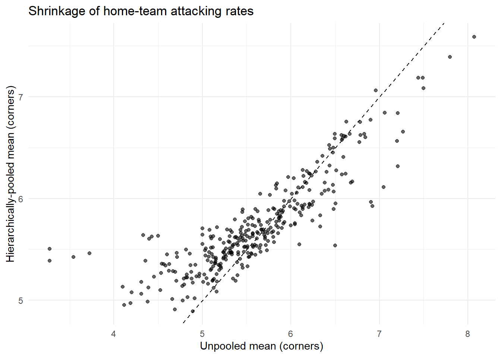
7.3 Bootstrap confidence interval
boot <- bootstraps(val_sub, times = 200, strata = NULL)
boot_diff <- boot |>
mutate(
delta = map_dbl(splits, ~{
dat <- analysis(.x)
mu_league <- predict(fit_league_sub, dat, type = "response")
mu_glmm <- predict(fit_home_sub, dat, type = "response", allow.new.levels = TRUE) +
predict(fit_away_sub, dat, type = "response", allow.new.levels = TRUE)
mean(-dpois(dat$total_corners, mu_league, log = TRUE)) -
mean(-dpois(dat$total_corners, mu_glmm, log = TRUE))
})
)
# 95% confidence interval contains 0 --> edge is not statistically reliable
quantile(boot_diff$delta, c(.025, .5, .975)) 2.5% 50% 97.5%
-0.002868465 0.001409043 0.004861320 8 Random forest
set.seed(0)
#---------------------------------------------------------------------
# 8.1 Custom season‑wise CV folds -----------------------------------
#---------------------------------------------------------------------
# Within each season/year randomly sample train/validation split of 80/20
# (allows to abstract from potential year effects, but still include month
# effects, i.e. assume iid within years)
# Leave out 2010 as test set to compare performance to previous models
val_prop <- 0.20 # 20% hold‑out per season
seasons <- 2005:2009 # training seasons (2010 = test)
# Create initial train/test split
rf_final_split <- make_splits(
list(
analysis = which(lubridate::year(train_all$date) %in% seasons),
assessment = which(lubridate::year(train_all$date) == 2010)
),
data = train_all
)
rf_train <- training(rf_final_split)
rf_test <- testing(rf_final_split)
# Helper to build one rsplit per season
make_year_split <- function(df, yr, val_prop) {
idx_year <- which(lubridate::year(df$date) == yr)
n_val <- floor(length(idx_year) * val_prop)
val_idx <- sample(idx_year, n_val)
make_splits(list(analysis = setdiff(idx_year, val_idx),
assessment = val_idx),
data = df)
}
# Create folds
rf_folds <- map(seasons, ~ make_year_split(rf_train, .x, val_prop))
rf_cv <- rsample::manual_rset(rf_folds, ids = paste0("year_", seasons))
#---------------------------------------------------------------------
# 8.2 Model spec + recipe + workflow -------------------------------
#---------------------------------------------------------------------
# Define random forest model specification
rf_spec <- rand_forest(
mtry = tune("mtry"),
trees = tune("trees"),
min_n = tune("min_n")
) |>
set_mode("regression") |>
set_engine("ranger", importance = "impurity")
# Define recipe
rf_rec <- recipe(total_corners ~ league_id + home_team_id + away_team_id + month,
data = rf_train)
# Define workflow
rf_wflow <- workflow() |>
add_model(rf_spec) |>
add_recipe(rf_rec)
# Extract parameters and set range for hyperparameters
p <-
rf_rec |>
prep(verbose = TRUE) |>
bake(new_data = rf_train) |>
ncol() - 1The retained training set is ~ 0.48 Mb in memory.rf_param <-
rf_wflow |>
extract_parameter_set_dials()
rf_param <- rf_param |>
update(
mtry = mtry(c(round(sqrt(p)/2), p)),
trees = trees(c(100, 1000)),
min_n = min_n(c(5, 400))
)
#---------------------------------------------------------------------
# 8.3 Tune model ---------------------------------------------------
#---------------------------------------------------------------------
# Define initial grid
initial_grid <-
rf_param |>
update(
mtry = mtry(c(round(sqrt(p)), round(sqrt(p)*2))),
trees = trees(c(100, 250)),
min_n = min_n(c(50, 150))
) |>
grid_regular(levels = 2)
# Set RMSE as relevant metric
rmse_metric <- metric_set(yardstick::rmse)
# Initialise parallel processing
#print("Setting up parallel processing")
n_cores <- parallel::detectCores() - 1
plan(multisession, workers = n_cores)
doFuture::registerDoFuture()
#print("Finished parallel processing setup")
# Initial tuning
rf_initial <-
rf_wflow |>
tune_grid(
resamples = rf_cv,
grid = initial_grid,
metrics = rmse_metric,
control = control_grid(verbose = TRUE)
)
# RMSE looks fairly similar for initial grid points
collect_metrics(rf_initial)# A tibble: 8 × 9
mtry trees min_n .metric .estimator mean n std_err .config
<int> <int> <int> <chr> <chr> <dbl> <int> <dbl> <chr>
1 2 100 50 rmse standard 3.35 5 0.0762 Preprocessor1_Model1
2 4 100 50 rmse standard 3.37 5 0.0778 Preprocessor1_Model2
3 2 250 50 rmse standard 3.35 5 0.0786 Preprocessor1_Model3
4 4 250 50 rmse standard 3.36 5 0.0773 Preprocessor1_Model4
5 2 100 150 rmse standard 3.34 5 0.0791 Preprocessor1_Model5
6 4 100 150 rmse standard 3.34 5 0.0804 Preprocessor1_Model6
7 2 250 150 rmse standard 3.34 5 0.0800 Preprocessor1_Model7
8 4 250 150 rmse standard 3.34 5 0.0807 Preprocessor1_Model8# Bayesian Optimization with Gaussian process model
rf_bo <-
rf_wflow |>
tune_bayes(
resamples = rf_cv,
metrics = rmse_metric,
initial = rf_initial,
param_info = rf_param,
iter = 30,
control = control_bayes(verbose = TRUE)
)
# Extract best performing model
rf_best <- select_best(rf_bo, metric = "rmse")
# Finalize workflow with best performing model
final_rf_wflow <-
rf_wflow |>
finalize_workflow(rf_best)
# Fit final model
final_rf_fit <- last_fit(final_rf_wflow, split = rf_final_split,
metrics = rmse_metric)
# Stop parallel processing
plan(sequential)
#---------------------------------------------------------------------
# 8.4 Results ------------------------------------------------------
#---------------------------------------------------------------------
# Predictions for OOS test set
rf_pred_test <- collect_predictions(final_rf_fit)
# Variable importance plot
tibble(
Predictor = names(extract_fit_engine(final_rf_fit)$variable.importance),
Importance = unname(extract_fit_engine(final_rf_fit)$variable.importance)
) |>
ggplot(aes(x = reorder(Predictor, Importance), y = Importance)) +
geom_bar(stat = "identity") +
coord_flip() +
xlab("")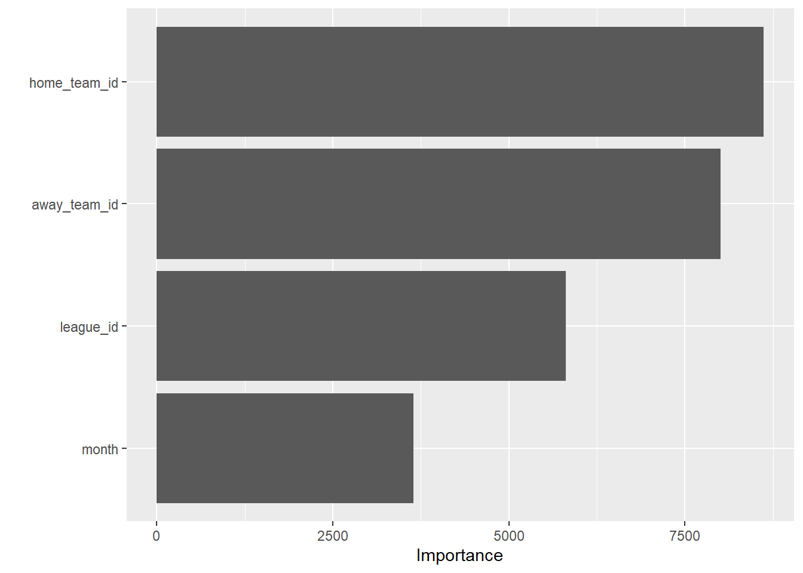
9 Comparison : Random Forest vs. Hierarchical GLMM
last_season <- max(lubridate::year(train_all$date))
val_idx <- lubridate::year(train_all$date) == last_season
train_sub <- train_all[!val_idx, ]
val_sub <- train_all[ val_idx, ]
# refit GLMMs on TRAIN_SUB
fit_home_sub <- update(fit_home_glmm, data = train_sub)
fit_away_sub <- update(fit_away_glmm, data = train_sub)
#---------------------------------------------------------------------
# Generate predictions ------------------------------------------------
#---------------------------------------------------------------------
val_sub <- val_sub |>
mutate(
lambda_glmm = predict(fit_home_sub,
newdata = val_sub,
type = "response",
allow.new.levels = TRUE) +
predict(fit_away_sub,
newdata = val_sub,
type = "response",
allow.new.levels = TRUE)
)
#---------------------------------------------------------------------
# RMSE & NLL --------------------------------------------------------
#---------------------------------------------------------------------
rmse_rf <- collect_metrics(final_rf_fit) |>
filter(.metric == "rmse") |> pull(.estimate)
rmse_glmm <- yardstick::rmse_vec(val_sub$total_corners, val_sub$lambda_glmm)
nll <- function(obs, mu) mean(-dpois(obs, mu, log = TRUE))
nll_rf <- nll(rf_pred_test$total_corners, rf_pred_test$.pred)
nll_glmm <- nll(val_sub$total_corners, val_sub$lambda_glmm)
tibble(Model = c("Random Forest", "Hierarchical GLMM"),
RMSE = c(rmse_rf, rmse_glmm),
NLL = c(nll_rf, nll_glmm))# A tibble: 2 × 3
Model RMSE NLL
<chr> <dbl> <dbl>
1 Random Forest 3.49 2.67
2 Hierarchical GLMM 3.46 2.66#---------------------------------------------------------------------
# Diagnostic scatter plots ------------------------------------------
#---------------------------------------------------------------------
rf_pred_test |>
ggplot(aes(x = total_corners, y = .pred)) +
geom_point(alpha = 0.25) +
geom_smooth(method = "lm", se = FALSE) +
geom_abline(color = "red") +
theme_minimal() +
coord_obs_pred() +
labs(title = "RF: Predicted vs True total corners",
x = "True corners", y = "Predicted corners")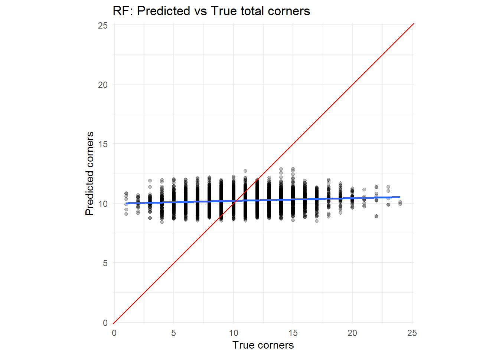
val_sub |>
ggplot(aes(x = total_corners, y = lambda_glmm)) +
geom_point(alpha = 0.25) +
geom_smooth(method = "lm", se = FALSE) +
geom_abline(color = "red") +
theme_minimal() +
coord_obs_pred() +
labs(title = "GLMM: Predicted vs True total corners",
x = "True corners", y = "Predicted corners")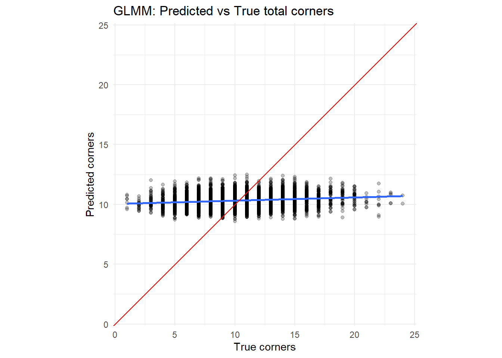
10 Predict test set (Poisson models)
# λ's from Baseline Poisson model
test <- test |>
mutate(weight_td = 1) |>
left_join(lambda_const, by = "league_id") |>
left_join(lambda_td, by = "league_id")
# λ's from Hierarchical Poisson GLMM
test <- test |>
mutate(
lambda_home_glmm = predict(fit_home_glmm,
newdata = test,
type = "response",
allow.new.levels = TRUE),
lambda_away_glmm = predict(fit_away_glmm,
newdata = test,
type = "response",
allow.new.levels = TRUE),
lambda_total_glmm = lambda_home_glmm + lambda_away_glmm
)11 Translate λ → betting probabilities
# Function to get probabilities from Poisson distribution
corner_probs <- function(lambda, line) {
frac <- line - floor(line + 1e-8)
# Asian 0.5,1.5,… line → no push
if (abs(frac - 0.5) < 1e-8) {
k_under <- floor(line)
p_under <- ppois(k_under, lambda)
p_at <- 0
p_over <- 1 - p_under
} else {
k_line <- as.integer(round(line))
p_under <- ppois(k_line - 1, lambda)
p_at <- dpois(k_line, lambda)
p_over <- 1 - p_under - p_at
}
c(p_under, p_at, p_over)
}
# Function to add obtained probabilities to existing test set
add_probs <- function(df, lambda_col, prefix) {
probs <- t(mapply(corner_probs, lambda = df[[lambda_col]], line = df$line))
colnames(probs) <- paste0("p_", c("under", "at", "over"), "_", prefix)
bind_cols(df, as_tibble(probs))
}
# Append probability columns
test <- test |>
add_probs("lambda_const", "pois_const") |>
add_probs("lambda_td", "pois_td") |>
add_probs("lambda_total_glmm", "pois_glmm")12 Bet sizing (Sharpe‑ratio parity)
#---------------------------------------------------------------------
# Define staking scheme ---------------------------------------------
#---------------------------------------------------------------------
staking_method <- "fullroll" # "sigma" or "fullroll"
roll <- 341 # bankroll (units)
sigma_target <- 0.01 * roll # sigma target
#---------------------------------------------------------------------
# Select Hierarchical Poisson GLMM ----------------------------------
#---------------------------------------------------------------------
results <- test |>
select(match_id, league_id, date,
home_team_id, away_team_id, line, under, over,
lambda_total_glmm, p_under_pois_glmm, p_at_pois_glmm, p_over_pois_glmm,
bet_u_o, stake
) |>
rename(lambda_glmm = lambda_total_glmm,
p_under = p_under_pois_glmm,
p_at = p_at_pois_glmm,
p_over = p_over_pois_glmm)
#---------------------------------------------------------------------
# Expected value / variance helpers ---------------------------------
#---------------------------------------------------------------------
bet_metrics <- function(p_win, p_push, odds) {
q_loss <- 1 - p_win - p_push
b <- odds - 1
ev <- p_win * b - q_loss
var <- p_win * b^2 + q_loss - ev^2
sr <- if (var > 0) ev / sqrt(var) else 0
f_full <- if (ev <= 0) 0 else (p_win * b - q_loss) /
(b * (p_win + q_loss))
list(ev = ev, var = var, sr = sr, f_full = f_full)
}
#---------------------------------------------------------------------
# Compute bet metrics & choose side ----------------------------------
#---------------------------------------------------------------------
results <- results |>
mutate(
## UNDER
met_U = pmap(list(p_under, p_at, under), bet_metrics),
ev_U = map_dbl(met_U, "ev"), var_U = map_dbl(met_U, "var"),
sr_U = map_dbl(met_U, "sr"),
## OVER
met_O = pmap(list(p_over, p_at, over), bet_metrics),
ev_O = map_dbl(met_O, "ev"), var_O = map_dbl(met_O, "var"),
sr_O = map_dbl(met_O, "sr"),
## choose side (skip if both EV ≤ 0)
pick = case_when(
ev_U > ev_O & ev_U > 0 ~ "UNDER",
ev_O > ev_U & ev_O > 0 ~ "OVER",
TRUE ~ "SKIP"
),
weight_raw = case_when(
pick == "UNDER" ~ sr_U,
pick == "OVER" ~ sr_O,
TRUE ~ 0
),
var_unit = case_when(
pick == "UNDER" ~ var_U,
pick == "OVER" ~ var_O,
TRUE ~ 0
)
) |>
mutate(across(c(weight_raw, var_unit), replace_na, 0))
#---------------------------------------------------------------------
# Portfolio‑level scaling -------------------------------------------
#---------------------------------------------------------------------
# σ‑target (1% of roll)
port_variance <- sum((results$weight_raw)^2 * results$var_unit)
scaler_sigma <- if (port_variance > 0) sigma_target / sqrt(port_variance) else 0
scaler_fullroll <- if (sum(results$weight_raw) > 0) roll / sum(results$weight_raw) else 0
results <- results |>
mutate(
stake_target = scaler_sigma * weight_raw, # variance‑parity
stake_full = scaler_fullroll * weight_raw, # spend full roll
stake_raw = if (staking_method == "fullroll") stake_full else stake_target,
stake = round(stake_raw, 2),
bet_u_o = if_else(pick == "SKIP", NA_character_, pick)
)
#---------------------------------------------------------------------
# Summary ------------------------------------------------------------
#---------------------------------------------------------------------
port_variance <- sum(results$stake^2 * results$var_unit, na.rm = TRUE)
port_sigma <- sqrt(port_variance)
port_sigma_pct <- 100 * port_sigma / roll
results <- results |>
select(match_id, league_id, date,
home_team_id, away_team_id, line, under, over,
lambda_glmm, p_under, p_at, p_over,
bet_u_o, stake)
cat(glue::glue(
"Method: {staking_method}\n",
"Bets placed: {sum(!is.na(results$bet_u_o))}\n",
"Total stake: {round(sum(results$stake), 2)}u\n",
"Portfolio σ: {round(sqrt(port_variance), 2)}u ",
"({round(port_sigma_pct, 2)}% of roll)\n")
)Method: fullroll
Bets placed: 260
Total stake: 341.05u
Portfolio σ: 24.28u (7.12% of roll)13 Final output (CSV for submission)
results |>
write_csv(here("corners_predictions_with_bets.csv.csv"))